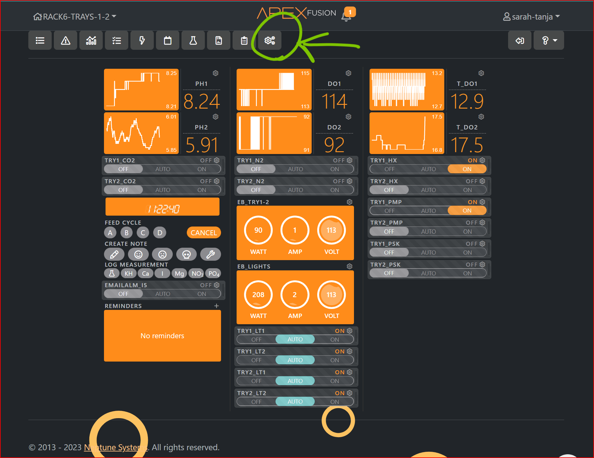

Lights
AI
serial number: 897600704A2
Phone
Downloaded the APP on phone
Made a Hydra account
Login
Click +
Choose AI-Fi Device
In WiFI settings, connect to network directly hydra26-D897600704A2
When connected, it will auto open a browser tab with the controller & settings for the lights
Exit and go back to app
click + again
choose AI-Fi
It will prompt you with a window to somplete setup
Name the tank
Select all the lights in the system
Parent
Child
Connect to JPG-Lab network: ed_cW=#Wbb_ZWF[_aYW@
Lights will attempt to connect to Wi-Fi Network…. needed for firmware updates…
Kessil lights
Download the Kessil App
We are using these two Kessil Products together:
Kessil WiFi app control user manual
Connected 8 lights to each other in a daisy-chain using the k-link usb-c cords. There will be two lights with an open k-link port (at the beginning and end of the ‘chain’). Plug a Kessil WiFi Dongle into one of the open k-link ports.
The WiFi dongle will blink purple. In the Kessil App, select to connect Through Wireless Router where Device can connect to internet & control AP9X/Dongle at the same time and don’t check the box that says Apex Fusion control ONLY. Here, we want to use the Kessil app to control the lights (not Apex!). The Kessil app has much more control than Apex. Apex can only turn the outlet on or off, the Kessil app allows you to set the color and intensity of the light without having to fiddle with the potentiometers.
The purple blinking light may switch straight to green in this case, because the lights had been previously connected to the network in an earlier setup by Miranda Roethler.
Open the app and select Quick Reload
Apex
Sign-in to Apex Fusion account.
The seatables are controlled by Apex controller Rack6-Trays-1-2
The dashboard will look like:

Click the ‘three gear icon’ in the top nav bar to expand the nav bar.
It’ll show additional icons. Click on the one that looks like an outlet.
This controls ‘on’ and ‘off’. It doesn’t control the intensity or color, which have to be controlled manually using the potentiometers on the back of the lights.
Because they’re all linked with the k-links, when you adjust the light color or intensity it is mimicked with the other three. This way we can control that they go on and off in Neptune, and when they are on, they’re all at the same intensity and color (so long as nobody touches the potentiometers!)
What happens if you accidently touch the ‘other’ potentiometers? I’m asking because I did this, and now they are no longer linked to the ‘main’ potentiometer on the WiFi Dongle light…
Let’s measure the light level with the apogee light meter, apogee instruments Model MQ-510 serial # 2116.
Pumps
SICCE Syncra silent multifunction pump 4.0, HMAX 3.7m (12.5ft), QMAX: 3500 L/H (951 gph). Though tray 2 of the seatables rack is lower(meaning that the pump had to work harder to move water from the tray to the heat exchangers mounted above), the flow rate was adjusted so that each seatable tray had a GPH flow rate of ~20gph.